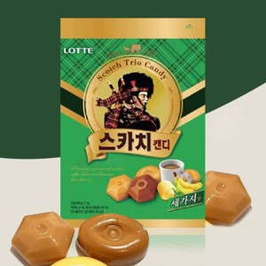
공통 기억BUTTERSCOTCH
스카치캔디
처음 보는 메뉴명을 누구나 아는 달달고소한 맛으로 바꾸는 공통 언어.
“처음 먹는 맛이 아니라, 더 깊어진 익숙한 맛.”
버터스카치를 새롭게 설명하는 대신, 댄싱컵이 이미 가진 ‘라떼 맛집’의 신뢰와 누구나 아는 세 가지 맛의 기억으로 구매 이유를 만듭니다.
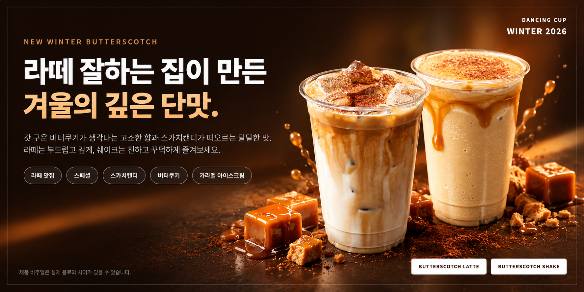
브랜드 신뢰 2개와 맛의 기억 3개를 하나의 설득 순서로 연결합니다.
크림, 레이어, 캐러멜 비주얼 중심. 첫 관심은 빠르지만 브랜드 선택 이유는 약합니다.
기존 라떼 신뢰에 구체적인 맛 비유를 더해 ‘왜 댄싱컵인가’까지 답합니다.
완전히 새로운 메뉴가 아니기 때문에, 제품명보다 댄싱컵이 만들어 온 라떼의 흐름이 차별점입니다.
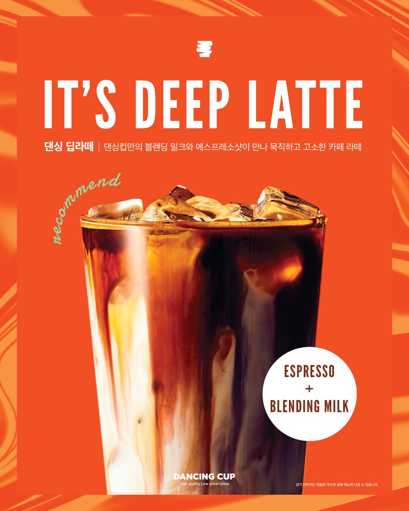
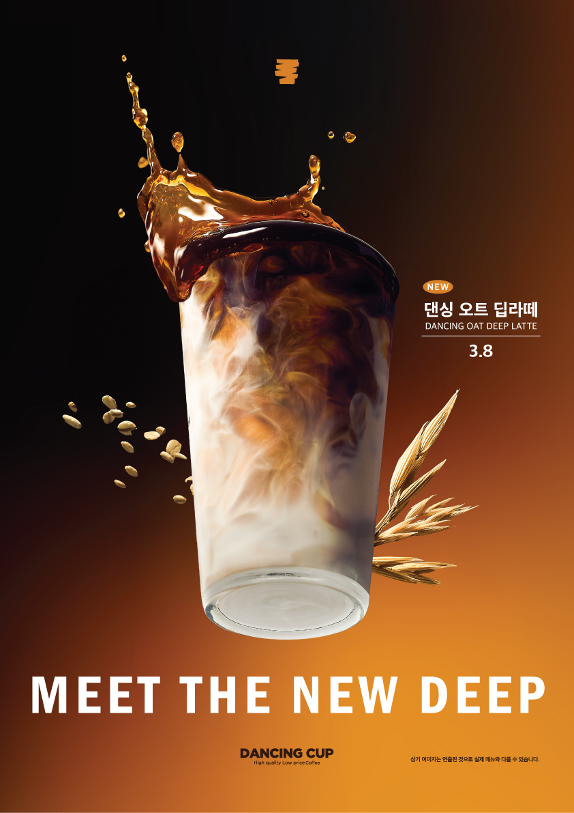
이번 겨울에는 라떼의 선택지를 ‘깊고 부드러운 단맛’까지 확장합니다. 신메뉴의 낯섦보다 라떼 맛집의 다음 메뉴라는 기대를 먼저 만듭니다.
원료를 길게 설명하기보다, 기존 라떼에서 무엇이 더해졌고 어떻게 마셔야 하는지를 세 장면으로 보여줍니다.
딥라떼부터 이어진 부드럽고 균형 잡힌 라떼 경험.
연유를 사용한 블렌딩 밀크로 은은하고 크리미한 풍미를 더함.
진한 크림부터 깔끔한 커피와 블렌딩 밀크까지 한 번에 느끼는 방식.
‘고급스러운 버터 풍미’보다 스카치캔디·버터쿠키·캐러멜 아이스크림이 빠르고 선명합니다.

공통 기억처음 보는 메뉴명을 누구나 아는 달달고소한 맛으로 바꾸는 공통 언어.
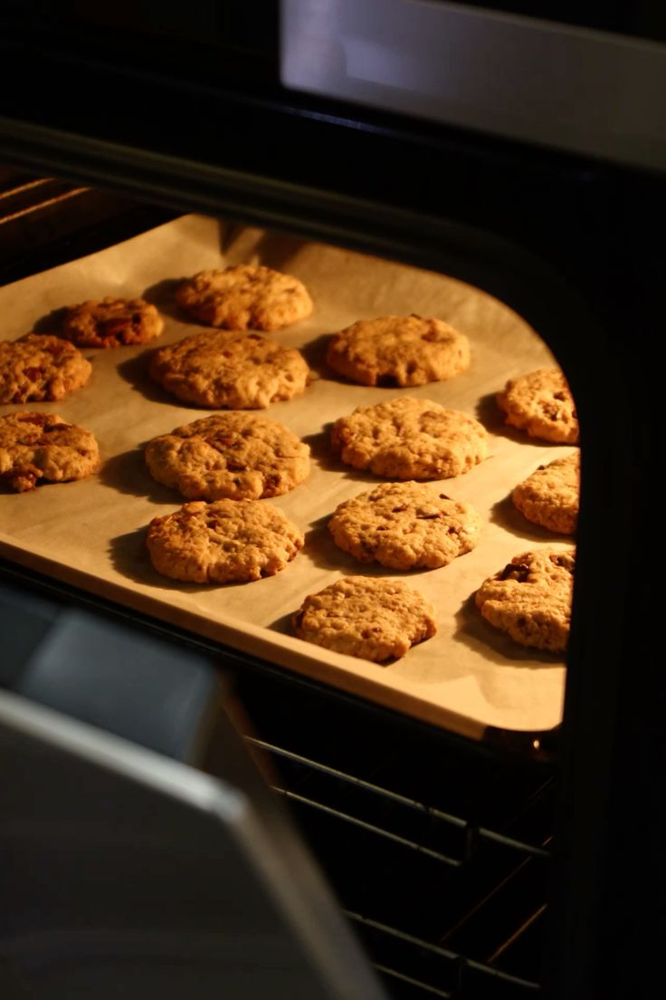
라떼 향컵을 가까이했을 때, 오븐에서 막 꺼낸 버터쿠키처럼 은은하고 고소한 향.
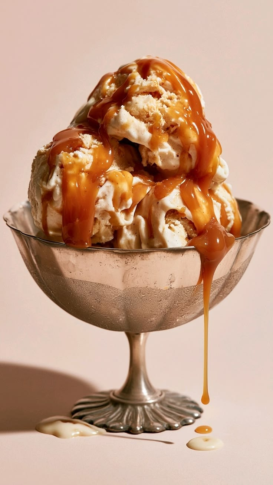
쉐이크 맛쉐이크의 진한 단맛과 천천히 흐르는 꾸덕한 질감을 즉시 전달.
국내 프랜차이즈의 겨울 메뉴는 고구마·초콜릿·토피넛·푸딩처럼 달고 밀도 높은 소재를 반복적으로 사용합니다.
공식 계정과 협업 릴스를 비교해, 시선을 잡는 비주얼과 맛을 믿게 만드는 후킹 방식을 확인했습니다.
매머드는 공식 계정과 인플루언서 릴스에서 크림을 붓고 레이어가 섞이는 장면을 반복해, 버터스카치를 먼저 ‘먹고 싶은 비주얼’로 각인하고 있습니다.
공식 게시물 ↗ · 인플루언서 릴스 ↗기존 라떼 신뢰 위에 버터쿠키와 캐러멜 아이스크림이라는 맛의 장면을 붙입니다.
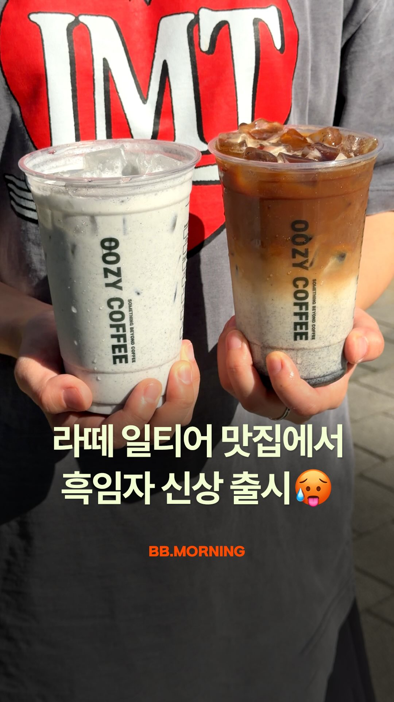
REEL CAPTURE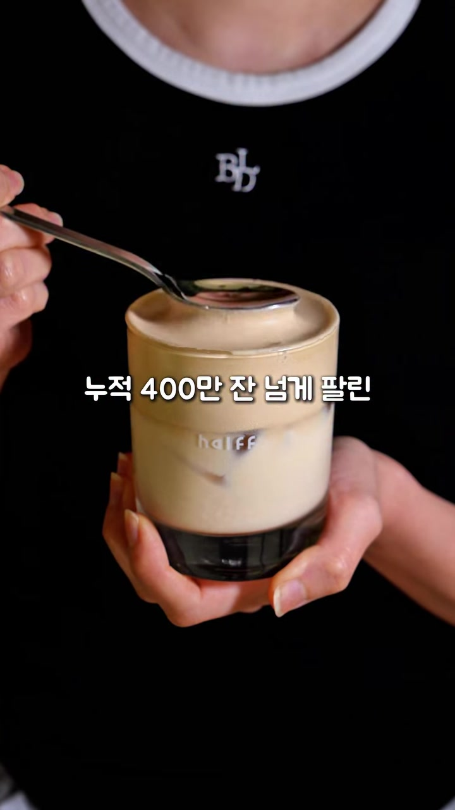
REEL CAPTURE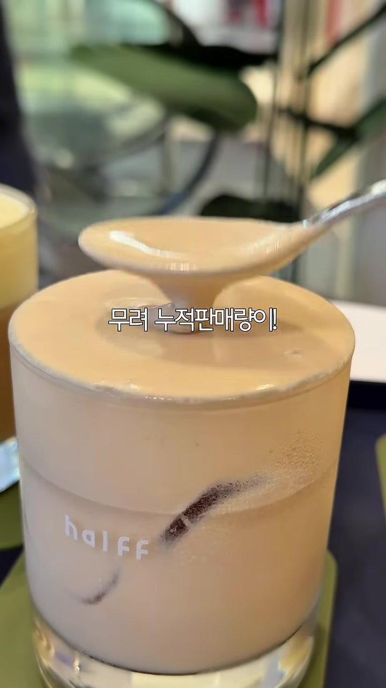
REEL CAPTURE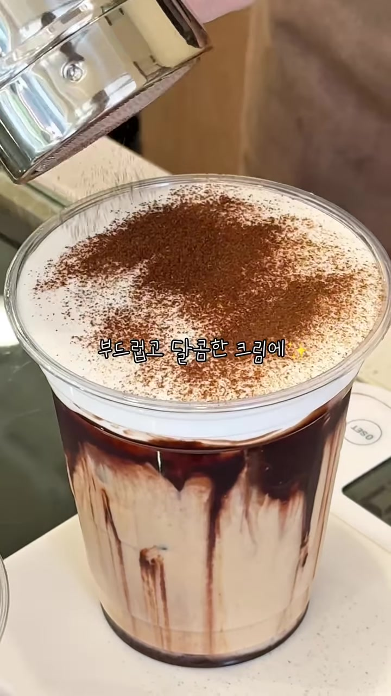
REEL CAPTURE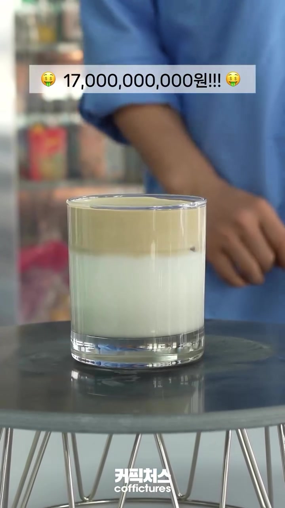
REEL CAPTURE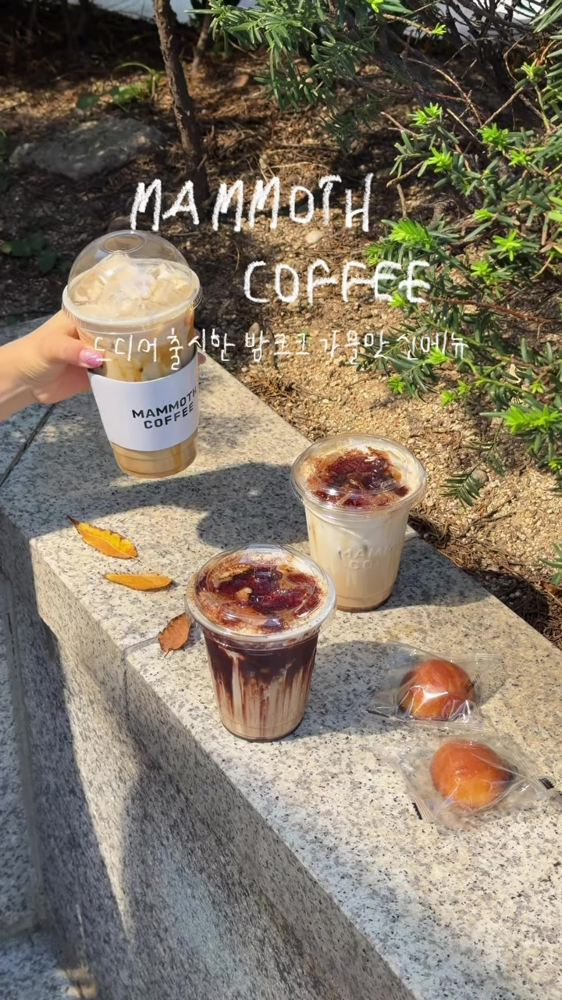
REEL CAPTURE라떼 맛집·매출·판매량·실제 리뷰 같은 검증 근거가 첫 관심을 만든다.
스카치캔디·버터쿠키처럼 먹어본 언어가 구매를 설득한다.
리드로 마시기·꾸덕하게 흐르기 같은 장면이 저장을 만든다.
공식 계정은 메시지를 각인하고, 인플루언서는 자기 말투로 그 맛을 증명합니다.
브랜드 설명을 읽는 대신, 본인의 첫인상과 두 메뉴 중 원픽을 말하게 합니다.